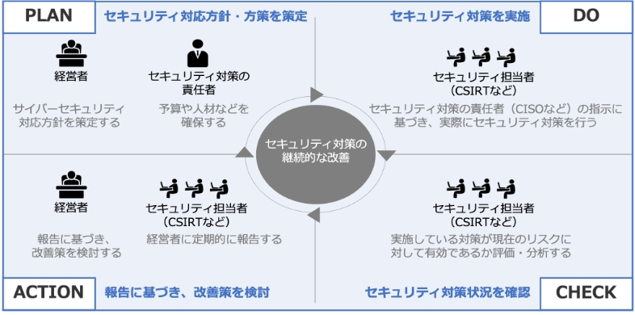

7-5-3. サイバーセキュリティ経営ガイドラインの実践の流れ
サイバーセキュリティ経営ガイドラインの活用手順
図41. サイバーセキュリティ経営ガイドラインの全体の流れ
（出典） 経済産業省「サイバーセキュリティ経営ガイドライン Ver3.0」を基に作成
PLAN
はじめに、サイバーセキュリティ対応方針・方策を策定します。
- 経営者は、3原則を認識した上でサイバーセキュリティ対応方針を策定します。
- セキュリティ対策の責任者（CISOなど）は、経営者の指示に基づき、リスクを許容範囲内に抑制するための方策を検討し、必要となる資源（予算や人材など）を確保します。
DO
セキュリティ担当者（CSIRTなど）は、セキュリティ対策の責任者（CISOなど）の指示に基づき、実際にセキュリティ対策を行っていきます。具体的には以下の作業を行います。
- リスクの把握や対応計画の策定
- サイバー攻撃の防御や検知
- 分析などの保護対策の実施
- 緊急時の対応体制を整備、事業継続、復旧体制の整備
CHECK
実施しているセキュリティ対策がリスクに対して有効であるか評価・分析をします。
セキュリティ担当者（CSIRTなど）は、サイバーセキュリティ経営ガイドライン付録の「サイバーセキュリティ経営チェックシート」や「サイバーセキュリティ経営可視化ツール」を活用し、経営者が指示した事項の実践状況をチェックします。
ACTION
セキュリティ担当者（CSIRTなど）は、経営者に指示された事項の実践状況について、CISOを通じて経営者に報告し、経営者は報告をもとに改善策を検討します。
新たなサイバーセキュリティリスクの発見などにより、追加の対応が必要な場合には、対処方針を修正します。